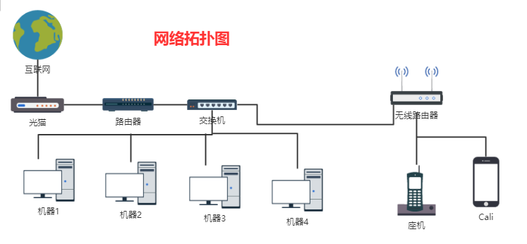
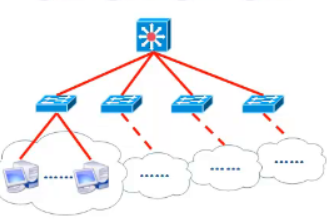
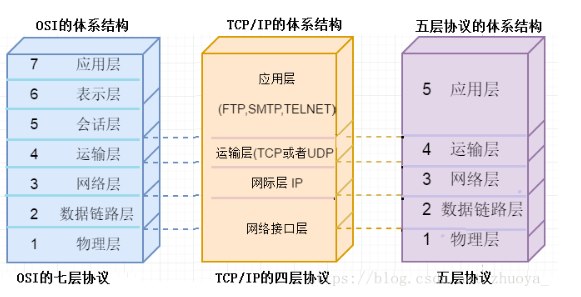
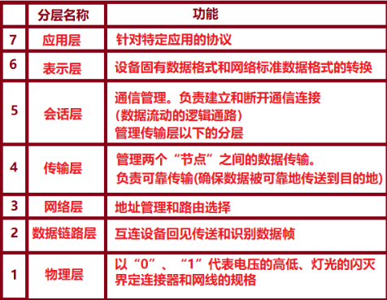

什么是计算机网络
计算机网络，是指将地理位臵不同的具有独立功能的多台计算机及其外部设备，通过通信线路连接起来，在网络操作系统，网络管理软件及网络通信协议的管理和协调下，实现资源共享和信息传递的计算机系统。
简单地说，计算机网络就是通过电缆、电话线或无线通讯将两台以上的计算机互连起来的集合。
网络基础名词
网络：network
互联网：internet
- 是所有网络互连起来的一个巨型网络
以太网：Ethernet
- 最常见的局域网通信协议
- 是一种技术规范，不是一种具体的网络
C/S架构软件
- C/S 结构，即大家熟知的客户机和服务器结构。它是软件系统体系结构，通过它可以充分利用两端硬件环境的优势，将任务合理分配到Client端和Server端来实现，降低了系统的通讯开销
B/S架构软件
- B/S是基于特定通信协议(HTTP)的C/S架构，也就是说B/S包含在C/S中，是特殊的C/S架构。
ISP：互联网服务提供商
即向广大用户综合提供互联网接入业务、信息业务、和增值业务的电信运营商
ISP是经国家主管部门批准的正式运营企业，享受国家法律保护。
中国大陆主要的ISP ： 中国五大基础运营商（电脑上网方式和手机上网方式）：
1
2
3
4
5
6
7
8中国电信：拨号上网、ADSL
中国网通：拨号上网、ADSL、FTTx
中国铁通：拨号上网、ADSL
中国移动：GPRS及EDGE无线上网、FTTx
中国联通：GPRS及CDMA无线上网
电信重组之后，中国网通并入中国联通，剔除中国联通CDMA，组成新联通；
中国联通CDMA并入中国电信组成新电信；
中国铁通并入中国移动组成新移动；
IP:网络协议
- 全称互联网协议地址，是指IP地址，意思是分配给用户上网使用的网际协议（英语：InternetProtocol,IP）的设备的数字标签。常见的IP地址分为IPv4与IPv6两大类，但是也有其他不常用的小分类。
- IP地址是IP协议提供的一种统一的地址格式，它为互联网上的每一个网络和每一台主机分配一个逻辑地址，以此来屏蔽物理地址的差异。
公网IP
- 公网、内网是计算机的两种网络接入方式，公网IP地址需要向ISP申请，企业可以申请到的公网IP非常有限，具有公网IP地址的计算机和Internet上的其他计算机可随意互相访问。
内网IP
- 也就是局域网，最直观的就是像网吧，公司内部的电脑，用交换机，HUB，路由连起来的。
- 内网的计算机可向外网上的其他计算机发送连接请求，但外网上的计算机无法随意访问内网的计算机。
ip地址分类
A类地址：10.0.0.0——10.255.255.255
B类地址：172.16.0.0—-172.31.255.255
C类地址：192.168.0.0—192.168.255.255
D类地址：224.0.0.0—239.255.255.255
E类地址：240.0.0.0—247.255.255.255
动态IP
- 因为IP地址资源非常短缺，通过电话拨号上网或普通宽带上网用户一般不具备固定IP地， 而是由ISP动态分配暂时的一个IP地址，每次重新接入网络时，IP地址都会发生变化。
静态IP：固定IP
- 是长期固定分配给一台计算机（或路由器）使用的 IP 地址，一般是特殊的服务器才拥有固定 IP 地址。
域名：Domain
域名解析：DNS
动态域名解析：DDNS
- DDNS 是将用户的动态 IP 地址映射到一个固定的域名解析服务上，用户每次连接网络的时候客户端程序就会通过信息传递把该主机的动态 IP 地址传送给位于服务商主机上的服务器程序，服务项目器程序负责提供 DNS 服务并实现动态域名解析。
广域网:WAN
局域网：LAN
- 局域网自然就是局部地区形成的一个区域网络，其特点就是分布地区范围有限，可大可小，大到一栋建筑楼 与相邻建筑之间的连接，小到可以是办公室之间的联系。
- LAN:局域网 local area network —–》用于连接较短距离内的计算机
- LAN口： 内网接口 —–》企业网、校园网
无线局域网：WLAN
网关：Gateway
无线接入点：WAP
- 是计算机网络中一种连接无线网络至有线网络（以太网）的设备，又称为无线基站。
- 它通常作为一个单独设备，并通过有线网络连接到路由器，也能与路由器集成在一起。
- 无线路由器就是一个AP
- AP: access point 访问点（无线访问点） –》无线路由器就是一个AP
- 无线速率越快越好！！！ —–>买设备的时候一定要看！！
- WAN口(网线接入口)：–》千兆网口
- AP: access point 访问点（无线访问点） –》无线路由器就是一个AP
100M 1000Mbps
虚拟专用网：VPN
虚拟局域网：VLAN
- 虚拟局域网（VLAN）是一组逻辑上的设备和用户，这些设备和用户并不受物理位置的限制，可以根据功能、部门及应用等因素将它们组织起来，相互之间的通信就好像它们在同一个网段中一样，由此得名虚拟局域网。
Wi-Fi：无线热点
- 由AP和无线网卡组成的无线网络
子网：subnet
- 为了确定网络区域，分开主机和路由器的每个接口，从而产生了若干个分离的网络岛，接口端连接了这些独立网络的端点。这些独立的网络岛叫做子网(subnet)。
分布式系统：distributed system
- 存在着一个能为用户自动管理资源的网络操作系统，由它来自动调用完成用户任务所需的资源，正网络系统对于用户来说就像一个大的计算机系统一样。
网络地址转换：NAT
协议：protocol —–用来统一标准的
- 网络协议为计算机网络中进行数据交换而建立的规则、标准或约定的集合。
- 协议是需要人去制定，定义了很多细节
- 华为、腾讯等硬件和软件公司–》协议 –》使用软件去开发。
拓扑图：
描述整个网络结构的图

星型拓扑：
- 优点：易于实现、已于网络扩展、易于故障排查、非常常见、成本低
- 缺点：中心节点压力大、组网成本比较高
- 
- 网络分层
- 核心层
- 汇聚层
- 接入层
URL ：统一资源定位系统
- 对能从 Internet 上得到的资源的位置和方向方法的一种表示。
无线网卡
- 可以让台式机使用无线网络
标准：—–一系列的协议
协议分为很多种，每一种协议都明确的地界定了它的行为规范。
ISO（国际标准化组织）
IEEE（电气和电子工程师学会）
ISO制定了OSI参考模型，该模型将通信协议中的必要的功能分成了7层，每个分层负责接收由它下一层所提供的服务，并且负责向它的上一层提供服务。上下层之间进行交互是所遵循的约定叫做“接口”。同一层之间的交互所遵循的叫做“协议”。
网络协议
OSI下每一层的协议如下：
物理层：RJ45、CLOCK、IEEE802.3 （中继器，集线器，网关）
数据链路：PPP、FR、HDLC、VLAN、MAC （网桥，交换机）
网络层：IP、ICMP、ARP、RARP、OSPF、IPX、RIP、IGRP、 （路由器）
传输层：TCP、UDP、SPX
会话层：NFS、SQL、NETBIOS、RPC
表示层：JPEG、MPEG、ASII
应用层：FTP、DNS、Telnet、SMTP、HTTP、WWW、NFS
网络体系结构
- 计算机网络层次结构模型与各层协议的集合。
- OSI(Open System Interconnection,开放系统互连)的七层协议体系结构。 较复杂
- TCP/IP是一个四层的体系结构。
- 五层协议
- 
- 计算机网络层次结构模型与各层协议的集合。
OSI参考模型
- 由国际标准化组织 ISO 指定的网络层次结构模型。
- 
常见网络协议
- HTTP:超文本传输协议
- HTML：超文本标记语言
- TCP：传输控制协议
- TCP/IP：传输控制协议/网间协议
- FTP：文件传输协议
- UDP ： 一种无连接的、不可靠的传输层协议。
- PPP 协议： 支持多种协议，不仅在拨号电话线，并且在路由器 - 路由器。
- SMTP ： 用于实现互联网中电子邮件传送功能的协议。
- NFS ： 用于网络中不同主机之间的文件共享的协议。
几种常用的网络设备
中继器：RP
- 信号在双绞线中传输的过程中信号的功率会逐渐衰减，当信号衰减到一定程度时将造成信号失真，所以为了方便较远距离的两计算机进行通信，就在这两个计算机之间安装一个中继器，让信号能传的更远
- 它的作用是放大信号，补偿信号衰减，支持远距离的通信。
- 中继器工作在物理层，只是起到了扩展传输距离的作用，对高层是透明的。
集线器：Hub
- 多接口的中继器,可以连接多台设备，一般有4、8、16、24、32等数量的接口。
- 每台计算机想与其他计算机进行通信时，计算机首先要将数据包通过双绞线送到集线器上，而集线器是用广播的方式将包同时发给8个端口，8个端口的计算机收到广播信息后对信息进行检查，是发给自己的就接收，不是的话就不理睬。
- 同样，集线器也是工作在物理层。
网桥：Bridge
- 网桥像是一个聪明的中继器，如前所说，中继器只是简单的连接了两个网络，任何数据都可以通过中继器发出，但网桥有所不同。网桥除了扩展网络的距离或范围，还能提高网络的性能和安全性。
- 为了解决集线器的冲突问题，有效隔离冲突域
交换机：Switch
路由器：router
- 路由器是连接两个或多个网络的硬件设备，在网络间起网关的作用，是读取每一个数据包中的地址然后决定如何传送的专用智能性的网络设备。
- 连接各交换机，实现跨网络传输
- 工作在三层（网络层）；通过ip路由表转发数据
- 路由器的厂商：
- 高端：思科cisco、华为huawei
- 中端：锐捷、H3C、中兴
- 低端：tp_link 、小米、水星、腾达、360
交换机和路由器的区别
- 交换机的作用：组建局域网
- 路由器的作用：跨网段通信
无线路由器：路由器+交换机+无线功能 –》无线交换机
- 无线路由器带机数量：
- 无线路由器带机数量是有限的，一般的无线路由器带机数在20-30！
- 无线路由器带机数量：
常用软件
- ERP ： Enterprise Resource Planning （企业资源计划）
- CRM ： Customer Relationship Management （客户关系管理）
- 是指企业用CRM技术来管理与客户之间的关系。
- OA ： Office Automation （办公自动化）
- 是将现代化办公和计算机技术结合起来的一种新型的办公方式。办公自动化没有统一的定义，凡是在传统的办公室中采用各种新技术、新机器、新设备从事办公业务，都属于办公自动化的领域
其他概念
虚拟化
- 将一台服务器/主机通过虚拟化软件技术，让他变成多台服务器/主机
容器
- 缩减版的虚拟机，将虚拟机中一些不需要的功能删除，只留下必要功能，从而保持最小规格
云
- 利用虚拟化技术，我们能够动态的调整每台虚拟机的硬件大小，如cpu核数，内存大小等
单工通信
- 在一条通信线路（一般包含一条发送信道和一条接收信道）中信号只能向一个方向传送的方法。
半双工通信
- 在一条通信线路中信号可以双向传送，但一个时间只能向一个方向传送的方法。
全双工通信
- 在一条通信线路中信号可以同时双向传输数据的方法。
链路
- 从一个结点到相邻结点的一段物理线路（有线或无线），而中间没有任何其他的交换结点。
- 数据链路： 将实现控制数据传输的通信协议的软硬件加到链路上即是数据链路。
纠错码
- 让每个传输的分组带上足够的冗余信息，以便在接收端能发现并自动纠正传输差错的编码方法。
Browser
- 用来浏览 Internet 上的主页的客户端软件。
Page
- 信息资源在 WWW 服务器中存储的形式。
被动攻击
- 在不影响网络正常工作的情况下，黑客进行信息的截获、窃取、破译的攻击方式。
主动攻击
- 黑客有选择地破坏信息的有效性和完整性的攻击方式。
服务攻击
- 为网络提供某种服务的服务器发起攻击，造成该网络的“拒绝服务”，使得网络工作不正常的攻击方式。
非服务攻击
- 不针对某项具体的应用服务，而是基于网络层等低层协议而进行的攻击。
防抵赖
- 防止信息源结点用户对其所发的信息事后不承认 ，或者是信息目的结点收到信息之后不认帐问题的出现。
对称加密
- 对信息的加密与解密都使用相同的密钥的加密技术。
非对称加密
- 加密的密钥可以公开，解密的密钥需要保密的加密技术。
保护方式
- 在网络管理员发现网络存在非法入侵者时，立即采取措施制止入侵者的活动的方法。
跟踪方式
- 在网络管理员发现网络存在非法入侵者时，不是立即制止入侵活动，而是采取跟踪入侵活动的方法。
身份认证
- 用来确认网络中信息传输的源结点用户与目的结点用户是否真实的服务。
报文
- 在传输层之间传输的协议数据单元。
段 segment
- TCP 协议传递给 IP 的信息单元。
重传计时器
- 为了控制丢失的或丢弃的报文段， TCP 使用了处理报文段确认的等待时间的计时器
连接建立延时
- 传输服务用户要求建立连接到收到连接确认之间所经历的时间。
连接建立失败的概率
- 在最大连接建立延迟时间内连接未能建立的可能性。
传输延迟
- 从源主机传输用户发送报文开始到目的主机传输用户接收到报文为止经历的时间。
残余误码率
- 用于测量丢失或乱序的报文数占整个发送的报文数的百分比。
恢复功能
- 在出现内部问题或拥塞情况下，传输层本身自发终止连接的可能性。